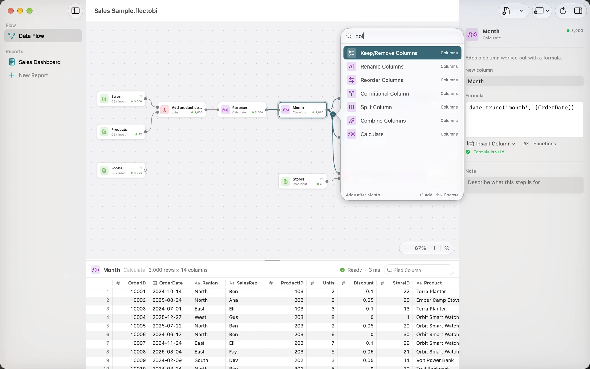

Keyboard and accessibility
FlectoBI can be used from the keyboard alone. This page lists every shortcut, then explains how the app works with VoiceOver, Increase Contrast and Reduce Motion.
Menu shortcuts
These work in any Workbook window.
Flow menu
| Shortcut | Action |
|---|---|
| Shift-Command-I | Add Input Files… |
| Command-R | Refresh Inputs |
| Shift-Command-R | Write All Outputs |
| Command-. | Stop the running Step |
| Command-D | Duplicate Selected Steps |
Stop works only while FlectoBI is busy. Delete Selected Steps has no shortcut, but the Delete key does it on the canvas.
Report and View menus
| Shortcut | Action |
|---|---|
| Option-Command-N | New Report |
| Command-D | Duplicate Visual |
| Command-1 | Show Flow |
| Option-Command-I | Toggle Inspector |
| Option-Command-P | Show Column Profile |
Command-D is shared. It duplicates Steps when the Flow has focus, and a Visual when a Report has focus. Show Column Profile works when the preview grid has focus and shows a Column.
On the Flow canvas
| Key or gesture | Action |
|---|---|
| Click | Select a Step |
| Command-click or Shift-click | Add to the selection |
| Drag on empty space | Select with a box |
| Double-click a Step | Open its inspector |
| Double-click the canvas | Open the Transform palette |
| Arrow keys | Nudge selected Steps. Shift moves further |
| Delete | Remove the selected Steps |
| Command-A | Select all |
| Esc | Deselect, or cancel a drag |
| Return | Rename the selected Step |
| Control-Return | Open the Connect Output To menu |
| Tab, Shift-Tab | Select the next or previous Step, left to right |
| Any letter | Open the palette with that letter typed |
At either end of the Flow, Tab moves focus to the next control.
Zoom
| Shortcut | Action |
|---|---|
| Command-- | Zoom Out |
| Command-0 | Actual Size |
| Command-= or Command-+ | Zoom In |
Zoom runs from 25% to 200%. Zoom to Fit is a button. Pinching with a trackpad also zooms.
The palette and editors
| Key | Action |
|---|---|
| Up, Down | Choose a Transform in the palette |
| Return | Add the chosen Transform |
| Esc | Close the palette, or cancel a database sheet |
| Command-Return | Apply a Formula in the Formula editor |
| Command-Return | Add the Input, in a database sheet’s Custom Query mode |

On a Report Page
Select a Visual first, then use these keys.
| Key | Action |
|---|---|
| Tab, Shift-Tab | Select the next or previous Visual in reading order |
| Control-Tab | Leave the canvas |
| Arrow keys | Move the Visual one cell |
| Shift-arrow keys | Resize the Visual |
| Option-Left or Option-Up | Select the previous category in a chart |
| Option-Right or Option-Down | Select the next category in a chart |
| Command-arrow keys | Turn a 3D Visual, Spike Map or globe by 15 degrees |
| Esc | Clear the Page’s Selections |
| Delete | Delete the selected Visual |
On Visuals that do not turn, Command-arrows still move the Visual one cell. See Selections and Slicers and 3D Visuals.
VoiceOver
FlectoBI supports VoiceOver. We say “supports” and not more, because we have not yet finished checking every part by hand.
- Cards and Steps have actions. A Step offers Show Inspector, Rename, Connect Output To… and Delete. A Visual offers Select, Duplicate, Delete, Make Wider, Make Narrower, Make Taller and Make Shorter, plus “Filter by” items for its Values.
- 3D Visuals also offer Rotate Left, Rotate Right, Tilt Up, Tilt Down and Reset View.
- VoiceOver-Space selects a card.
- Pages are announced as, for example, “Page 2 of 4”, with an action to rename.
- Charts give a summary in words. A heatmap reads like “Heatmap of 12 rows by 24 columns; highest Orbit Smart Watch, Mar 2025, 14,123”, and a funnel gives its stages from first to last.
- Maps expose their top 100 places as elements. Marks that only decorate are hidden.
- Selections are announced, for example “Filtered by North”.
- Negative numbers are read as “minus 5”.
Charts do not rely on colour alone to show a Selection. Marks that are not chosen fade, and the chosen ones get a ring.
Increase Contrast
Turn on Increase Contrast in System Settings under Accessibility. FlectoBI then uses stronger colours, borders and rings, and draws the borders of map regions as lines. The 12-colour chart palette was checked in Light, Dark and Increase Contrast.
Reduce Motion
Turn on Reduce Motion in System Settings under Accessibility. FlectoBI then stops anything that moves.
- Marks appear in place, instead of growing from the baseline.
- Data changes snap, rather than slide.
- Hover and click effects that would move or resize something are turned off.
- The wire animation on a running Flow stops, and banners fade instead of sliding.
The one thing that still animates is a short fade when a Selection dims the other marks. It lasts 0.2 seconds.
3D Visuals never animate when they turn, with or without Reduce Motion.
Light and Dark
FlectoBI follows the system appearance. Choose Light or Dark in System Settings, and the app follows. There is no separate setting inside the app.